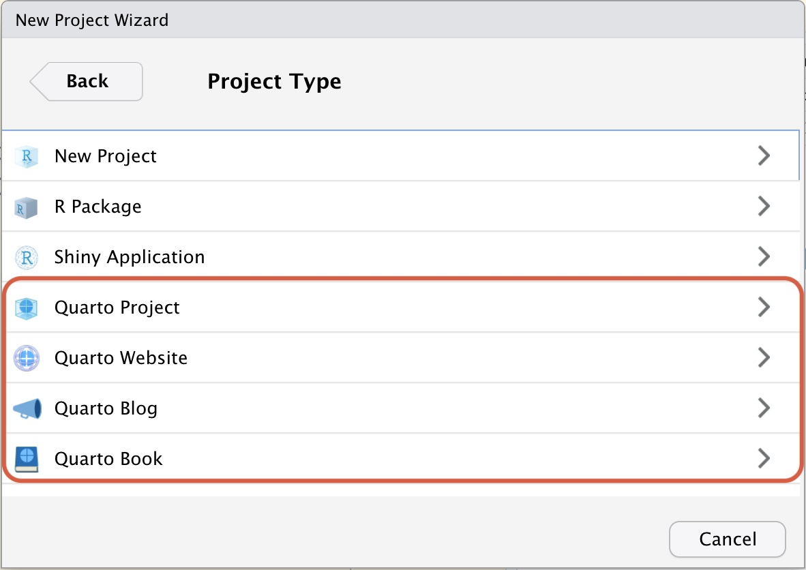
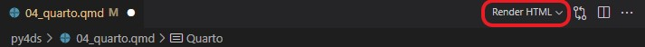

Quarto — це науково–технічна видавнича система з відкритим кодом, яка ґрунтується на універсальному конверторі документів Pandoc та використовує мову розмітки Markdown. Це універсальний інструмент для тих, хто пише на R, Python, Julia та Observable JavaScript.
За допомогою Quarto можна поєднувати описовий текст і код для створення відформатованих документів, веб–сторінок, постів у блогах, книг тощо.
23.1.1 Назва Quarto
Розробники Quarto хотіли використати ім’я, яке мало деяке значення в історії видавничої справи. Вибір пав на Quarto (від латинського quārtō, скорочено Qto, 4to або 4º) — це формат книги або брошури в одну четвертину топографічного листа. На кожній стороні листа при цьому поміщається 4 сторінки книги (8 сторінок на один лист).
Найраннішим відомим виданням такого формату була Книга Сивіл (англ. Sibyllenbuch), що була надрукована Йоганном Гутенбергом у 1452–1453 роках.
Рисунок 23.2: Меню створення Quarto–проекту у VS Code
RStudio: File -> New Project… -> New Directory

Рисунок 23.3: Меню створення Quarto–проекту у RStudio
23.2.3 Як працює Quarto
Спочатку Knitr (для R) або Jupyter (для Python або Julia) виконує всі фрагменти коду .qmd-файлу і створює новий markdown (.md) документ, який включає в себе код і всі його результати. Далі .md–файл оброблюється Pandoc для перетворення у різноманітні формати файлів (HTML, PDF, Word тощо).
Рисунок 23.4: Процедура рендерінгу документів в Quarto
23.2.4 Рендерінг
Для рендерінгу документу можна використати кнопку Render в VS Code.

Рисунок 23.5: Клавіша рендерінгу документу в VS Code
Рендерінг за допомогою командного рядку:
terminal
quarto render <input> --to <format># Наприклад:quarto render document.qmd --to docx
23.3 Структура документів Quatro
Quatro документи складаються з трьох базових складових:
YAML–шапка знаходиться нагорі документу і відділена трьома дефісами (---) зверху та знизу. В ній зберігається мета–інформація документу: назва, дата створення, автор, інформація щодо роботи коду, контенту і процесу рендерінгу.
Ця частина документу йде одразу після YAML–шапки і складає основну частину документу.
Markdown — це популярна і зручна мова розмітки. Ви непевно зустрічали її в README.md–файлах репозиторіїв GitHub, а також у Telegram–повідомленнях.
23.3.3 Чанки з кодом
Чанки — це блоки, які відділяються від тексту потрійними зворотніми лапками ``` ( анг. backtick) на початку та в кінці. У фігурних дужках вказується мова програмування на якій необхідно виконати код.
```{python}print('Fly, you fools!')```
Результат чанку за замовчування виводиться одразу після нього, але все це можна налаштувати.
23.4 YAML-шапка
Метадані документу можуть бути задані у шапці документу або окремим _quarto.yml-файлом.
В цій частині документу зберігається інформація щодо назви документу, дати, автора, налаштування рендерінгу, параметри чанків та інші додаткові налаштування. Всі параметри встановлюються у форматі key: value.
23.4.1 Налаштування виводу
Ключ format: відповідає за тип вихідного файлу.
Тип
Значення
Опис
Документи
html
pdf
docx
odt
epub
HTML
PDF
MS Word
OpenDocument
ePub
Презентації
revealjs
pptx
beamer
Revealjs
PowerPoint
Beamer
Markdown
gfm
commonmark
markua
GFM
CommonMark
Markua
Wiki
mediawiki
dokuwiki
zimwiki
jira
xwiki
MediaWiki
DocuWiki
ZimWiki
Jira Wiki
XWiki
А також цілу низку інших форматів, документацію по котрим можна отримати в розділі Reference документації.
23.4.2 Назва, дата та автор
В залежності від типу вихідного документу, ці ключі можуть відрізнятися, але наведу основні:
Ключ
Значення
title
Назва документа
subtitle
Підзаголовок документа
date
Дата документа
author
Автор або автори документа
23.4.3 Зміст
Для генерації змісту (анг. table of contents, скорочено toc) необхідно ключу toc задати значення true. В залежності від типу вихідного документу зміст буде згенерований відповідно до заголовків (Розділ 23.5.2).
Ключ
Значення
toc
Додайте автоматично створений зміст у вихідний документ.
toc-depth
Кількість рівнів розділу, які потрібно включити у зміст. За замовчуванням 3
toc-title
Заголовок, використаний для змісту.
23.4.4 Локалізація документу
Quarto, Pandoc та LaTeX генерують текстові елементи документу, які потребують локалізації. Наприклад: “Рисунок” або “Таблиця” для перехресних посилань, назви виносок тощо.
23.4.4.1 Налаштування lang
Приклад використання польської локалізації документу:
---title: "Mój dokument"lang: pl ---
Це призведе до використання польського перекладу компонентів документу, а також до застосування інших мовних правил обробки документів.
Наразі доступні повні переклади такими мовами:
англійська (en, за замовчуванням)
голландська (nl)
іспанська (es)
італійська (it)
китайська (zh)
корейська (kr)
німецька (de)
польська (pl)
португальська (pt)
російська (ru)
фінська (fi)
французька (fr)
чеська (cs)
японська (ja)
23.4.4.2 Власна локалізація
Якщо вас не влаштовує мова за умовчанням, яка використовується для певної частини документа, ви можете вказати альтернативну мову за допомогою ключа language. Наприклад, щоб замінити значення підписів «Author» і «Published», які використовуються в блоках заголовків, ви можете зробити це:
Я зробив власну українську локалізацію Quarto-документів, яку Ви можете завантажити з мого GitHub-репозиторія: https://github.com/aranaur/quarto-ukrainian.
Ознайомитися з усіма офіційними локалізаціями можна за посиланням: https://github.com/quarto-dev/quarto-cli/tree/main/src/resources/language.
23.5 Основи Markdown
Quarto ґрунтується на Pandoc та використовує різновид markdown в якості базового синтаксису. Pandoc markdown — це розширена та злегка перероблена версія синтаксису markdown.
Markdown — це формат звичайного тексту, який розроблено таким чином, щоб його було легко писати та, що ще важливіше, легко читати.
Quarto має вбудовану підтримку для створення діаграм Mermaid та Graphviz. Це дає змогу створювати блок–схеми, діаграми послідовності, діаграми станів тощо, використовуючи синтаксис простого тексту.
Приклад створення блок–схеми за допомогою Mermaid:
```{mermaid}flowchart LR A[Квадратна форма] --> B(Кругла форма) B --> C{Рішення} C --> D[Результат один] C --> E[Результат два]```
flowchart LR
A[Квадратна форма] --> B(Кругла форма)
B --> C{Рішення}
C --> D[Результат один]
C --> E[Результат два]
Виноски — чудовий спосіб привернути додаткову увагу до певних понять або чіткіше вказати, що певний вміст є додатковим або потребує додаткової уваги.
У Quarto є п’ять різноманітних виносок: - примітка (note) - застереження (warning) - важливо (important) - підказка (tip) - попередження (caution)
Колір і значок відрізнятимуться залежно від обраного типу. Ось як виглядають різні виноски в HTML:
Примітка
Зауважте, що існує п’ять типів виносок, зокрема: note, tip, warning, caution та important.
Застереження
Виноски — простий спосіб привернути увагу, наприклад, до цього застереження.
Важливо
Виноски точно покращать Ваш текст.
Підказка
Приклад виноски з текстом
Розгорніть, щоб дізнатися про згортання
Це приклад «згорнутої» виноски з попередженням. Використайте collapse="true" щоб згорнути її за замовчуванням та collapse="false" щоб виноска могла бути згорнута, але була розгорнути за замовчуванням.
23.5.8.2 Синтаксис markdown
Створіть виноски в розмітці за допомогою наступного синтаксису (зверніть увагу, що перший заголовок, використаний у виносці, використовується як заголовок виноски):
::: {.callout-note}## ПриміткаЗауважте, що існує п’ять типів виносок, зокрема:`note`, `tip`, `warning`, `caution` та `important`.:::::: {.callout-tip}## ПідказкаПриклад виноски з текстом:::::: {.callout-caution collapse="true"}## Розгорніть, щоб дізнатися про згортанняЦе приклад «згорнутої» виноски з попередженням.Використайте `collapse="true"` щоб згорнути її за замовчуванням та `collapse="false"` щоб виноска могла бути згорнута, але була розгорнути за замовчуванням.:::
23.5.9 Спеціальні символи
Синтаксис markdown
Результат
тире: -
тире: -
коротке (середнє) тире: --
коротке (середнє) тире: –
довге тире: ---
довге тире: —
Приклади
Життя прожити — не поле перейти (довге тире)
2020–2022 (коротке тире)
25 - 5 (тире)
23.6 Виконання коду
23.6.1 Налаштування виводу
Існує широкий спектр доступних параметрів для налаштування виводу виконаного коду. Усі ці параметри можна вказати глобально (у YAML-шапці з ключем execute) або для кожного блоку коду.
```{python}#| echo: trueimport numpy as npimport pandas as pdimport matplotlib.pyplot as pltx = np.arange(-4, 4, .012)y = np.arange(-4, 4, .012)X, Y = np.meshgrid(x, y)Z = 1 - np.abs(X) - np.sin(Y**2)W = 1 + Y - np.cos(X**2)fig = plt.figure(figsize=(8, 8))ax = fig.add_subplot(projection='polar')plt.scatter(Z, W, alpha=.03, s=0.2)plt.axis('off')plt.show()```
Параметри налаштування знаходяться у верхній частині блоку під спеціальним коментарем #|.
Налаштування
Опис
eval
Оцініть фрагмент коду (якщо false, просто відтворіть код).
echo
Показувати код (якщо false, код не буде виведено на екран).
warning
Показувати попередження, які виникають під час виконання коду
error
Показувати помилки у документі (це означає, що помилки під час виконання коду не зупинять обробку документа).
include
Запобігає виводу коду та його результатів.
23.6.2 Вбудований код
Quarto дозволяє виводити результат коду в середині тексту. Це особливо зручно, якщо необхідно щоб документ використовував найсвіжіші розрахунки. Проте синтаксис виводу залежить від рушія (анг. engine) Quarto: Jupyter, Knitr або OJS.
Наприклад, виведемо площу кола за заданим радіусом (radius):
```{python}#| echo: falsefrom IPython.display import Markdownimport mathradius = 10circle_area = math.pi * pow(radius, 2)Markdown((f"""Площа кола з радіусом {radius} дорівнює {round(circle_area, 2)}."""))```
Примітка
Зауважте, що ми використовуємо опцію echo: false, щоб не виводити код у фінальний документ, а тільки результат.
23.7 Основи публікації
Існує низка способів публікації документів, презентацій і веб-документів, створених за допомогою Quarto. Оскільки вміст, відтворений за допомогою Quarto, використовує стандартні формати (HTML, PDF, MS Word тощо), його можна опублікувати будь-де. Крім того, доступна команда quarto publish для легкої публікації в різних популярних службах (GitHub, Netlify, RStudio Connect тощо), а також різні інструменти, які полегшують публікацію з системи Неперервної інтеграції (анг. Continuous integration).
Скористайтеся цими сервісами, якщо один із наведених вище методів не відповідає вашим вимогам.
YAML це рекурсивний акронім YAML Ain’t Markup Language («YAML — не мова розмітки»). У назві відображена історія розвитку: на ранніх етапах мова називалася Yet Another Markup Language («Ще одна мова розмітки») і навіть розглядалася як конкурент XML, але пізніше була перейменована з метою акцентувати увагу на даних, а не на розбивці документів.↩︎